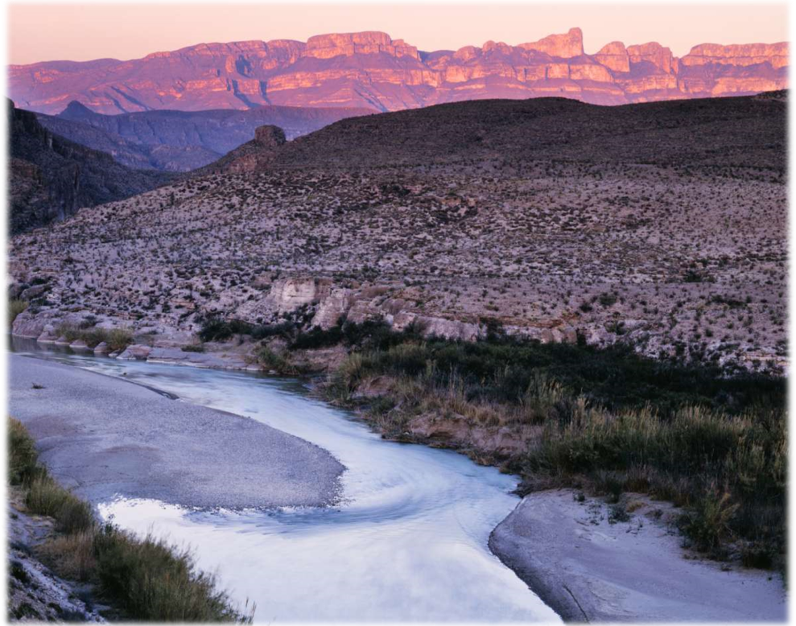
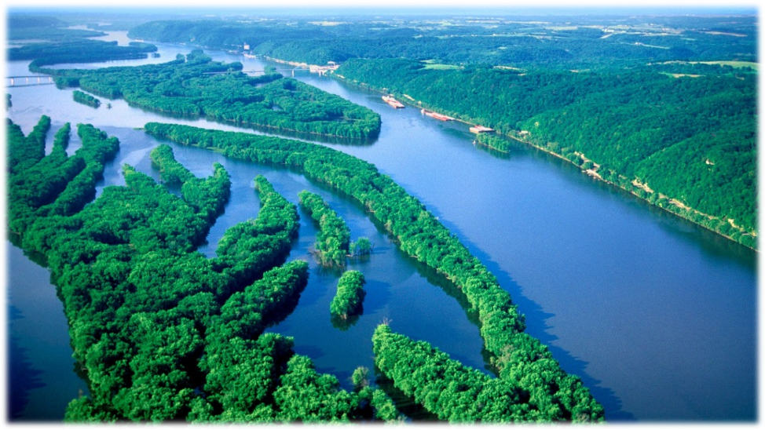

Северная Америка
Рио-Гранде
Рио-Гранде — пограничная река, разделяющая США и Мексику на протяжении 2 тыс. км — от города Эль-Пасо до самого устья, образованного при впадении реки в Мексиканский залив. Слившись с реками Пекос и Рио-Кончос, Рио-Гранде увеличила свою длину втрое.Река берет начало в горном массиве Сан-Хуан (штат Колорадо, США), который служит водоразделом между Атлантическим и Тихим океанами. Исток реки находится на высоте 3658 м в Национальном заповеднике Рио-Гранде.
Спускаясь с гор, река выходит на плоские и засушливые плато и образует долину Сан-Луис, замыкающуюся горами высотой 2000-2500 м. Питание реки носит крайне непостоянный режим, что вызвано выпадением осадков и особенностями рельефа. В верхнем течении Рио-Гранде питают снега и горные источники. В среднем и нижнем течении основным видом питания становятся ливни, приносимые ураганами, идущими с Мексиканского залива.
Но это происходит не часто: один раз за пять-семь лет. По этим причинам с сентября по ноябрь на реке происходят бурные паводки, в мае река начинает мелеть, а в летнее время она во многих местах почти пересыхает.
Сообщение через реку поддерживается по трем крупным автомобильным и железнодорожным мостам, поддерживаемым в рабочем состоянии американо-мексиканскими компаниями.Такие же совместные предприятия проводят мероприятия по регулированию стока и хранению воды, для чего была создана сеть водохранилищ и запруд.
<Нажми меня, чтобы узнать больше>Миссури
Крупнейшим притоком самой большой водной артерии США Миссисипи является река Миссури. Но и сама она может по праву считаться полноводной рекой, протянувшись на 3767 км. Площадь ее бассейна более 1 млн 300 тыс. кв. Миссури делит первое место по длине рек-притоков с сибирской рекой Иртыш. В переводе с языка индейского племени сиу, Миссури (Missouri на английском) — «Река или город больших лодок (каноэ)». Ударение в названии приходится на букву «у». По версии других исследователей, название сходно с индийским словосочетанием «грязная река». И действительно, всегда ее вода грязно-бурого цвета, мутная из-за вымывания прибрежных горных пород.
Пахотные земли бассейна реки — более 450 тыс. кв. км. Это почти 25% всех сельхозугодий США. Статистика констатирует, что здесь выращивается 35% всего урожая зерновых. Почти 750 тыс. кв. километров бассейна Миссури занимают пастбища, в основном отданные под крупный рогатый скот. Значительны и лесные запасы, территория лесных угодий более 110 тыс. кв. км.
За период 2-й половины XIX века по начало века XX на реке возведено огромное количество дамб и плотин. Около 35% площади Миссури — это цепь водохранилищ. Преобразования вызваны тем, что ее задействовали в выработке электроэнергии, ликвидации угроз от разрушительных наводнений, борьбе с засухой.

В начале XXI века природоохранные службы США начали принимать меры для спасения ареалов обитания животного мира в бассейне Миссури. Исследованиями было установлено, что плотины и каналы привели к уменьшению объемов переносимого водами реки материала, и, как следствие, к уничтожению мест обитания животных и земноводных.
<Нажми меня, чтобы узнать больше>Юкон
Река Юкон (на языке индейцев-гуачинов: «Великая река»), пятая по протяженности (3187 км) в Северной Америке, берет начало в озере Атлин в канадской провинции Британская Колумбия и, пройдя в своих верховьях еще через несколько озер, устремляется на север. В основном протекает по территории штата Аляска, делая здесь поворот на запад, и впадает в Берингово море в заливе Нортон.
Широкая известность к реке Юкон, и особенно к ее притоку речке Клондайк, пришла с началом так называемой золотой лихорадки. На территории Британской Колумбии она началась в 1850-х гг. А в 1874 г. достигла и бассейна Юкона. Торговцы пушниной и миссионеры уже с 1840-х гг. прекрасно знали, что в притоках Юкона золотой песок встречается довольно часто. Но купцы считали, что пушнина способна приносить прибыли больше, чем золото, кроме того, опасались конкуренции со стороны золотоискателей и скрывали информацию о находках.
Сегодня взаимоотношения человека с Юконом достаточно своеобразны. С одной стороны, река эта вполне обжитая: вдоль ее берегов протянулась вереница таких городов и поселков, как Доусон, Уайтхорс, Форт-Юкон, Танана. С другой на всем протяжении реки сооружено всего лишь четыре моста, по которым можно проехать на автомобиле. А потому людям здесь приходится по старинке пользоваться автомобильными переправами в скоротечные летние деньки, а зимой, где это возможно, переправляться по льду.
<Нажми меня, чтобы узнать больше>Миссисипи
Одна из наиболее важных рек в США – Миссисипи. Она одна из самых длинных в Соединенных Штатах и покрывает практически половину страны.
Водоем внес большой вклад в становление культуры и общества в этих местах. Совместно с рекой Миссури они формируют одну из крупных и важных систем по всему миру.
Что такое «Миссисипи» в переводе? Индейцы, жившие на этих территориях до открытия Америки, называли реку Миси-зиби, что в переводе означало: «Большая вода/река».
Спустя 10 лет на территории освоились другие французы и решили снова переименовать водоем в «Кольбе». Как вернулось старое название Миси-зиби неизвестно. Но после этого никто и никогда уже не переименовывал реку, и она стала называться Миссисипи.
Еще в 19 веке, согласно описаниям литературного творчества Марка Твена «Жизнь на Миссисипи», переправы на пароходах обладали огромной ролью для экономического роста страны. Быстро развивающееся пароходство считалось оплотом передвижения любых разновидностей грузов.
С тех пор, как первый пароход прошел рубеж от Огайо до Нового Орлеана и назад в 1811 году, река приобрела статус центральной транспортной магистрали Северной Америки.
<Нажми меня, чтобы узнать больше>